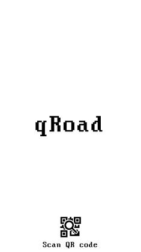
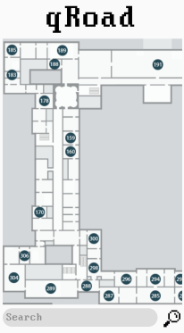

Exam cheat
First version of application for WearOs. It can using for save your notes for exam and open it in your watch.
Newest versions of that application located in that repository:
https://github.com/dzgeorgy/Exam-Cheat
Newest versions of that application located in that repository:
https://github.com/dzgeorgy/Exam-Cheat
QRoad
Building orientation can sometimes take a lot of time and effort, and geolocation can't accurately display your location in the building. Because of this, this application uses special qr codes that are configured for a specific position in the building and allow you to find yourself in it. QRoad is an application that allows you to determine your location in a building using qr codes.
How does it works:
You scan the qr code placed at the entrance to the building or in the building itself, then the app checks the points entered in it and displays your location.
How does it works:
You scan the qr code placed at the entrance to the building or in the building itself, then the app checks the points entered in it and displays your location.

